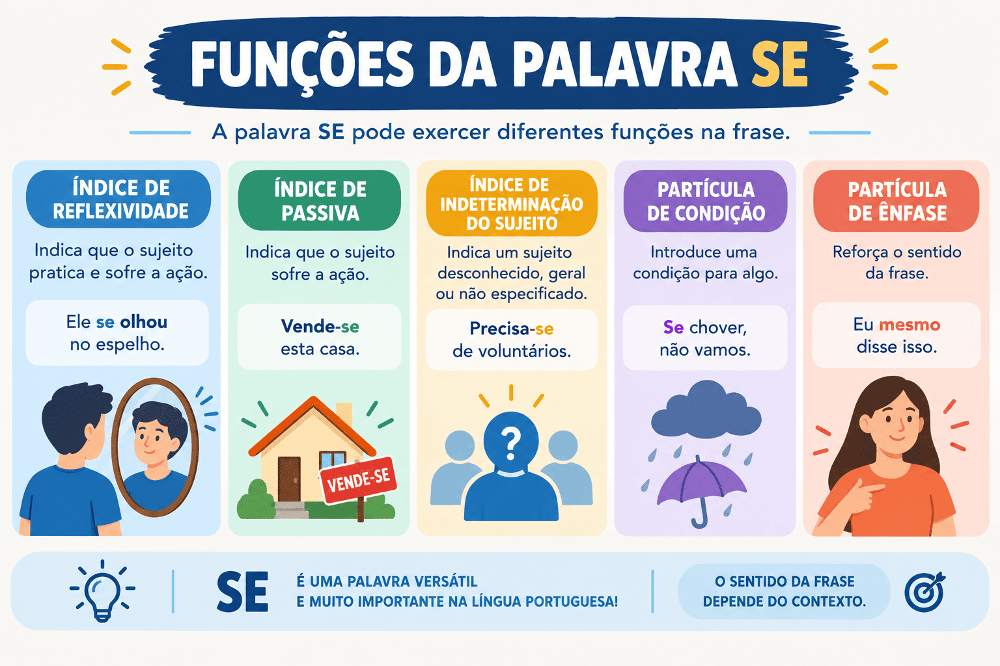

Funções da Palavra "SE": Guia Prático para Não Errar
A palavra “se” é um dos vocábulos mais versáteis e complexos da Língua Portuguesa. Em virtude de sua plasticidade sintática e morfológica, ela pode desempenhar múltiplos papéis: desde pronome oblíquo reflexivo ou apassivador até conjunção subordinativa e partícula de realce.
Essa multiplicidade funcional torna o vocábulo um dos assuntos prediletos de bancas de concursos públicos, vestibulares tradicionais e do ENEM. Compreender com segurança cada uma das classificações do “se” é indispensável não apenas para gabaritar questões de análise sintática, mas também para evitar desvios recorrentes de concordância verbal e pontuação na produção textual.
Neste conteúdo, você aprenderá a reconhecer e diferenciar todas as funções da palavra “se” (partícula apassivadora, índice de indeterminação do sujeito, pronome reflexivo, pronome recíproco, parte integrante do verbo, partícula expletiva, conjunção integrante e conjunção condicional), com quadros comparativos, testes práticos de substituição e um quiz com gabarito comentado.

Visão geral das funções da palavra "SE"
Para facilitar o aprendizado e a identificação rápida, podemos dividir as funções da palavra “se” em três grandes grupos morfológicos:
- Funções Pronominais: quando atua como pronome apassivador, índice de indeterminação do sujeito, pronome reflexivo, pronome recíproco ou parte integrante do verbo;
- Funções Conjuntivas: quando atua como conectivo subordinativo, introduzindo orações substantivas (conjunção integrante) ou orações adverbiais (conjunção condicional ou causal);
- Função Expletiva (ou de realce): quando atua apenas como recurso de ênfase expressiva, podendo ser retirada da frase sem prejuízo sintático.
Para determinar a função da palavra “se”, o primeiro passo consiste em observar a transitividade do verbo ao qual ela se associa e verificar se a palavra pode ser substituída por termos equivalentes (como a si mesmo ou isso).
1. Partícula Apassivadora (ou Pronome Apassivador)
A palavra “se” atua como partícula apassivadora (PA) quando se une a um Verbo Transitivo Direto (VTD) ou Verbo Transitivo Direto e Indireto (VTDI) para estruturar a voz passiva sintética.
Nesse caso, o termo não preposicionado que acompanha a construção não é objeto direto, mas sim o sujeito paciente da oração. Por essa razão, o verbo deve concordar obrigatoriamente com esse sujeito em número (singular ou plural).
VTD na 3ª pessoa + “se” (apassivador) + Sujeito Paciente
Vende-se o imóvel. / Vendem-se os imóveis.
Analisaram-se todas as reivindicações da categoria.
- Analisaram: verbo transitivo direto na 3ª pessoa do plural;
- -se: partícula apassivadora;
- todas as reivindicações da categoria: sujeito paciente no plural;
- teste prático de conversão: equivale a “Todas as reivindicações da categoria foram analisadas”.
2. Índice de Indeterminação do Sujeito (IIS)
A palavra “se” funciona como índice de indeterminação do sujeito (IIS) quando se liga a:
- Verbos Transitivos Indiretos (VTI): regidos por preposição obrigatória;
- Verbos Intransitivos (VI): que não exigem complemento verbal;
- Verbos de Ligação (VL): que ligam o sujeito a um predicativo.
Nessa estrutura, não há sujeito determinado na frase. O verbo fica obrigatoriamente na 3ª pessoa do singular, sendo gramaticalmente incorreto flexioná-lo no plural.
VTI / VI / VL na 3ª pessoa do singular + “se” (IIS) + Complemento Preposicionado
Precisa-se de operários. (e nunca *precisam-se)
Acredita-se em mudanças significativas na educação.
- Acredita: verbo transitivo indireto na 3ª pessoa do singular;
- -se: índice de indeterminação do sujeito;
- em mudanças significativas: objeto indireto (termo preposicionado);
- impossibilidade: não admite conversão para locução passiva analítica (*“Mudanças são acreditadas”).
Partícula Apassivadora vs. Índice de Indeterminação
A distinção entre essas duas funções é uma das maiores causas de erros em concursos e vestibulares. O quadro comparativo abaixo sintetiza as diferenças definitivas:
| Critério | Partícula Apassivadora (PA) | Índice de Indeterminação do Sujeito (IIS) |
|---|---|---|
| Transitividade do verbo | Transitivo Direto (VTD) ou Bitransitivo (VTDI) | Transitivo Indireto (VTI), Intransitivo (VI) ou Ligação (VL) |
| Presença de preposição | O elemento central não tem preposição | O elemento após o verbo é preposicionado |
| Sujeito da oração | Sujeito paciente determinado (explícito) | Sujeito indeterminado (desconhecido/genérico) |
| Concordância verbal | Concorda com o sujeito paciente (singular/plural) | Fica compulsoriamente na 3ª pessoa do singular |
| Conversão para analítica | Admite ser + particípio | Não admite conversão passiva |
| Exemplo prático | Consertam-se computadores. | Confia-se em pessoas honestas. |
Partícula Apassivadora
Alugam-se salas comerciais no centro.
O verbo é VTD e “salas comerciais” é sujeito paciente no plural. Logo, o verbo vai para o plural.
Índice de Indeterminação
Necessita-se de salas comerciais no centro.
O verbo é VTI (“necessitar de”) e o termo é preposicionado. O verbo fica no singular.
Dica de prova: olhe para a palavra imediatamente posterior ao “se”. Se houver preposição (de, em, a, por, com), o verbo é VTI e o “se” é índice de indeterminação → verbo no singular! Se não houver preposição e o verbo pedir objeto direto, o “se” é apassivador → verbo concorda com o sujeito.
3. Pronome Reflexivo
O “se” atua como pronome reflexivo quando o sujeito pratica uma ação que recai sobre si mesmo. A palavra equivale semanticamente a “a si mesmo” ou “a si próprio”.
Sintaticamente, o pronome reflexivo exerce a função de objeto direto (quando o verbo não exige preposição) ou de objeto indireto (quando o verbo rege complemento preposicionado).
O jovem cortou-se com a lâmina de barbear.
- O jovem: sujeito agente e paciente;
- cortou: verbo transitivo direto;
- -se: pronome reflexivo com função sintática de objeto direto (cortou a si mesmo).
O médico arrogante atribuiu-se méritos indevidos.
- méritos indevidos: objeto direto;
- -se: pronome reflexivo com função de objeto indireto (atribuiu a si próprio).
4. Pronome Reflexivo Recíproco
Ocorre quando a oração possui sujeito composto ou no plural e a ação expressa pelo verbo é realizada e sofrida de forma mútua, isto é, um elemento pratica a ação sobre o outro e vice-versa. Equivale a “um ao outro” ou “mutuamente”.
Os velhos amigos abraçaram-se calorosamente no reencontro.
O pronome “se” indica reciprocidade: um amigo abraçou o outro reciprocamente (abraçaram-se um ao outro). Sintaticamente, exerce a função de objeto direto.
5. Parte Integrante do Verbo (PIV)
A palavra “se” é classificada como parte integrante do verbo (PIV) quando faz parte da própria estrutura morfológica de determinados verbos, denominados verbos pronominais.
Esses verbos exprimem, frequentemente, sentimentos, atitudes ou processos psíquicos e comportamentais do sujeito. O “se” não desempenha função sintática autônoma de objeto; ele apenas integra o verbo.
- Verbos essencialmente pronominais: só existem acompanhados do pronome (arrepender-se, queixar-se, suicidar-se, abster-se, dignar-se, vangloriar-se);
- Verbos acidentalmente pronominais: podem ou não ser conjugados com o pronome, alterando frequentemente de sentido (lembrar / lembrar-se de, esquecer / esquecer-se de).
O candidato arrependeu-se da declaração precipitada.
- arrependeu-se: verbo pronominal essencial;
- -se: parte integrante do verbo (não é objeto nem partícula apassivadora);
- da declaração precipitada: objeto indireto.
Atenção com esquecer e lembrar: quando empregados sem o pronome, são transitivos diretos e não admitem preposição (“Esqueci o casaco”). Quando pronominais, tornam-se transitivos indiretos regidos pela preposição de (“Esqueci-me do casaco”).
6. Partícula Expletiva (ou de Realce)
A palavra “se” atua como partícula de realce (ou expletiva) quando é empregada apenas com valor expressivo ou estilístico. Sua principal característica é poder ser totalmente eliminada da oração sem que haja nenhum prejuízo sintático ou semântico substancial.
Geralmente aparece associada a verbos intransitivos que indicam movimento ou mudança de estado (ir-se, partir-se, rir-se, morrer-se, passar-se).
Os convidados foram-se embora antes do final da festa.
O pronome “se” pode ser retirado sem comprometer a estrutura gramatical da oração: “Os convidados foram embora antes do final da festa”. Trata-se, portanto, de partícula de realce.
Frase original: Riam-se felizes durante a comemoração.
Supressão do “se”: Riam felizes durante a comemoração. (Sentido e sintaxe preservados = Partícula Expletiva)
7. Conjunção Integrante
O “se” desempenha o papel de conjunção subordinativa integrante quando introduz uma oração subordinada substantiva (subjetiva, objetiva direta, objetiva indireta, etc.).
Nesse caso, a conjunção não possui função sintática de termo da oração; sua única função é ligar a oração subordinada à oração principal, exprimindo normalmente dúvida, incerteza ou questionamento indireto.
Método prático: para reconhecer a conjunção integrante, substitua a oração iniciada pelo “se” pela palavra “isso”. Se a frase fizer sentido pleno, o “se” é conjunção integrante!
A professora perguntou se os estudantes haviam compreendido o texto.
- A professora perguntou: oração principal;
- se os estudantes haviam compreendido o texto: oração subordinada substantiva objetiva direta;
- teste de substituição: “A professora perguntou isso” (o “se” é conjunção integrante).
8. Conjunção Subordinativa Condicional
O “se” funciona como conjunção subordinativa adverbial condicional quando introduz uma oração que expressa uma condição, uma circunstância ou uma hipótese indispensável para a realização do fato enunciado na oração principal.
“Se” com valor condicional = equivale a “caso”, “contanto que”, “desde que”.
Se você revisar todos os conteúdos com antecedência, obterá excelente resultado.
- Se: conjunção condicional;
- Se você revisar todos os conteúdos: oração subordinada adverbial condicional;
- teste de equivalência: “Caso você revise todos os conteúdos...”.
Outros valores conjuntivos menos frequentes
Em contextos específicos de interpretação textual, a conjunção subordinativa “se” pode assumir valor:
- Causal: equivalente a já que ou visto que (ex.: “Se o prazo já terminou, não adianta insistir”);
- Concessivo: equivalente a embora ou ainda que (ex.: “Se a prova estava difícil, os alunos conseguiram superar o desafio”).
Quadro Síntese: Como classificar a palavra "SE"
| Função do "SE" | Classe Gramatical | Comportamento Sintático / Teste Prático | Exemplo Canônico |
|---|---|---|---|
| Partícula Apassivadora | Pronome | VTD + “se” → admite transposição para passiva com ser | Construíram-se escolas. |
| Índice de Indeterminação | Pronome | VTI preposicionado + “se” → verbo sempre na 3ª sing. | Precisa-se de operários. |
| Pronome Reflexivo | Pronome | Sujeito pratica e sofre a ação (equivale a a si mesmo) | O jovem feriu-se. |
| Pronome Recíproco | Pronome | Ação mútua no plural (equivale a um ao outro) | Eles olharam-se surpresos. |
| Parte Integrante do Verbo | Pronome | Integra verbos pronominais essenciais (arrepender-se) | Ela queixou-se da nota. |
| Partícula de Realce | Palavra expletiva | Pode ser retirada sem prejuízo gramatical | Foi-se a esperança. |
| Conjunção Integrante | Conjunção | Inicia oração substantiva → substitui-se por isso | Não sei se choverá. |
| Conjunção Condicional | Conjunção | Expressa condição → substitui-se por caso | Se estudar, vencerá. |
Passo a passo para identificar o "SE" em uma questão
- Verifique se liga orações: Se o “se” estiver ligando duas orações, ele é conjunção. Aplique o teste do “isso” (conjunção integrante) ou do “caso” (conjunção condicional).
-
Se estiver ligado a um verbo, analise a transitividade:
- Verbo transitivo direto sem preposição? Teste a voz passiva: se der para transformar em foi/foram + particípio, é partícula apassivadora.
- Verbo transitivo indireto com preposição (de, em, a)? É índice de indeterminação do sujeito.
- O verbo expressa sentimento ou só existe com o pronome (queixar-se, arrepender-se)? É parte integrante do verbo.
- Verifique o sentido de reflexividade: O sujeito praticou a ação em si mesmo? Se sim, é pronome reflexivo. Foi uma ação mútua entre dois sujeitos? É pronome recíproco.
- Faça o teste da supressão: O “se” pode ser removido da frase sem que a estrutura sintática quebre? Se sim, é partícula expletiva ou de realce.
Quiz — Funções da Palavra "SE"
Questão 1 — Em “Publicaram-se novos editais para o concurso público”, a palavra “se” classifica-se como:
Questão 2 — Na frase “Ainda se acredita em soluções pacíficas para o conflito”, o vocábulo “se” funciona como:
Questão 3 — Em “O coordenador queria saber se as notas já estavam disponíveis”, a palavra “se” é classificada como:
Questão 4 — Assinale a oração em que o “se” exerce a função de pronome reflexivo recíproco:
Questão 5 — Em “Os alunos queixaram-se das condições da sala de aula”, a partícula “se” atua como:
Questão 6 — Na oração “Foram-se os dias alegres daquela infância distante”, a remoção da palavra “se” não causaria prejuízo sintático. Portanto, trata-se de:
Questão 7 — Em “Se você mantiver a regularidade nos estudos, conquistará a aprovação”, a oração iniciada por “se” possui valor:
Questão 8 — Qual das frases abaixo apresenta erro de concordância verbal segundo a norma-padrão?
Questão 9 — Em “O atleta preparou-se para a maratona”, o “se” exerce função sintática de:
Questão 10 — Observe as sentenças: I. “Construiu-se uma ponte”; II. “Necessita-se de verbas”. As palavras “se” classificam-se, respectivamente, como:
Resumo sobre as funções da palavra "SE"
- A palavra “se” pode exercer funções pronominais, conjuntivas ou expletivas na língua portuguesa.
- Como partícula apassivadora (PA), acompanha VTD ou VTDI na voz passiva sintética, e o verbo concorda com o sujeito paciente (ex.: Vendem-se apartamentos).
- Como índice de indeterminação do sujeito (IIS), acompanha VTI preposicionado, VI ou VL, e o verbo fica fixo na 3ª pessoa do singular (ex.: Precisa-se de ajudantes).
- Como pronome reflexivo, indica ação que recai sobre o próprio sujeito, equivalendo a “a si mesmo” (objeto direto ou indireto).
- Como pronome recíproco, exprime ação mútua entre dois ou mais agentes no plural, equivalendo a “um ao outro”.
- Como parte integrante do verbo (PIV), integra verbos pronominais essenciais (arrepender-se, queixar-se).
- Como partícula expletiva (realce), serve para dar ênfase expressiva e pode ser retirada sem prejuízo à estrutura sintática.
- Como conjunção integrante, inicia orações subordinadas substantivas (teste: substituição por “isso”).
- Como conjunção condicional, expressa circunstância de hipótese ou condição (teste: substituição por “caso”).
Conclusão
Dominar as funções da palavra “se” é um divisor de águas no estudo da sintaxe da Língua Portuguesa. Em vez de decorar listas isoladas, a identificação bem-sucedida decorre da aplicação de um raciocínio sistemático: avaliar se a palavra conecta orações (conjunção), se constrói reflexividade, se indetermina o agente ou se estrutura uma voz passiva sintética.
Esse conhecimento assegura precisão ao resolver provas objetivas e dissertativas de vestibulares e concursos, além de proporcionar domínio pleno da concordância verbal na produção da redação acadêmica e formal.
Perguntas frequentes sobre a palavra "SE"
Como saber se o "se" é partícula apassivadora ou índice de indeterminação?
Verifique a transitividade do verbo: se for transitivo direto (sem preposição no substantivo que o segue), o “se” é partícula apassivadora e o verbo concorda com o sujeito (“Vendem-se casas”). Se for transitivo indireto com preposição, é índice de indeterminação e o verbo fica no singular (“Precisa-se de casas”).
O que é o "se" como conjunção integrante?
É a conjunção subordinativa que introduz uma oração subordinada substantiva, geralmente indicando dúvida ou questão indireta. Pode ser identificado substituindo toda a oração que ele introduz pelo pronome “isso” (ex.: “Não sei se o resultado saiu” = “Não sei isso”).
O que significa "se" como partícula de realce?
Significa que a palavra foi inserida apenas com função de ênfase estilística. Ela não exerce função sintática e pode ser eliminada da oração sem qualquer alteração na correção ou no sentido básico (ex.: “Foram-se embora” = “Foram embora”).
Por que a frase "Tratam-se de problemas graves" está incorreta?
Porque o verbo “tratar-se” rege a preposição “de” (é transitivo indireto). Nesse caso, o “se” atua como índice de indeterminação do sujeito, e a regra gramatical determina que o verbo fique compulsoriamente na 3ª pessoa do singular: “Trata-se de problemas graves”.
Qual a diferença entre pronome reflexivo e pronome recíproco?
No reflexivo, a pessoa pratica a ação em si própria (“Ele feriu-se com a faca”). No recíproco, há mais de um sujeito e a ação ocorre de maneira mútua e compartilhada, um em relação ao outro (“Eles abraçaram-se longamente”).
Conteúdos relacionados
- Termos Integrantes e Acessórios da Oração
- Orações Coordenadas e Subordinadas: como reconhecer e classificar
- Conjunções da Língua Portuguesa: o que são, tipos, usos e exemplos explicados
- Locuções Adverbiais: o que são, tipos e exemplos
- Sintaxe: estrutura da oração e relações entre as palavras
- Interpretação e Produção Textual
- Gramática da Língua Portuguesa: Guia Completo
- Conteúdos de Gramática — Página 2
- Conteúdos de Gramática — Página 3
- Conteúdos de Gramática — Página 4
Referências bibliográficas
- BECHARA, Evanildo. Moderna Gramática Portuguesa. 37. ed. Rio de Janeiro: Nova Fronteira, 2009.
- CEGALLA, Domingos Paschoal. Novíssima Gramática da Língua Portuguesa. 48. ed. São Paulo: Companhia Editora Nacional, 2008.
- CUNHA, Celso; CINTRA, Lindley. Nova Gramática do Português Contemporâneo. 6. ed. Rio de Janeiro: Lexikon, 2013.
- GARCIA, Othon Moacyr. Comunicação em Prosa Moderna. 27. ed. Rio de Janeiro: Editora FGV, 2010.
- ROCHA LIMA, Carlos Henrique da. Gramática Normativa da Língua Portuguesa. 49. ed. Rio de Janeiro: José Olympio, 2011.
Explore Outros Conteúdos
Continue seus estudos acessando outras seções do site Mestre Kira: